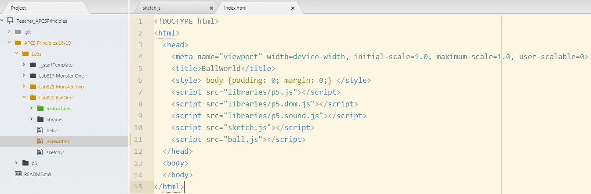

In your ball.js file, add a constructor function, variables and add the four methods shown below
/*
** Ball Constructor Function
** yoName
** Aug 20, 2018
*/
function Ball(locX, locY, rad, col){
// Instance variables
this.locX = locX;
this.locY = locY;
this.speedX = random(-3.0, 3.0);
this.speedY = random(-3.0, 3.0);
this.rad = rad;
this.col = col;
// This function calls other functions
this.run = function(){
this.checkEdges();
this.update();
this.render();
}
// This function changes the location of the ball
// by adding speed to x and y
this.update = function(){
this.locX = this.locX + this.speedX;
this.locY = this.locY + this.speedY;
}
//checkEdges() reverses speed when the ball touches an edge
this.checkEdges = function(){
if(this.locX < 0) this.speedX = -this.speedX;
if(this.locX > width) this.speedX = -this.speedX;
if(this.locY < 0) this.speedY = -this.speedY;
if(this.locY > height) this.speedY = -this.speedY;
}
// render() draws the ball at the new location
this.render = function(){
fill(this.col);
ellipse(this.locX, this.locY, rad, rad);
}
}
Save this file
In your ball.js file, add a constructor function, variables and add the four methods shown below
// Global variables
var b1;
// put setup code here
function setup() {
var cnv = createCanvas(800, 800);
cnv.position((windowWidth-width)/2, 30);
background(20,20,20);
b1 = new Ball(random(width), random(height),random(15, 35), color(250, 23, 23));
}
function draw() {
b1.run();
}
Save this file and run the program